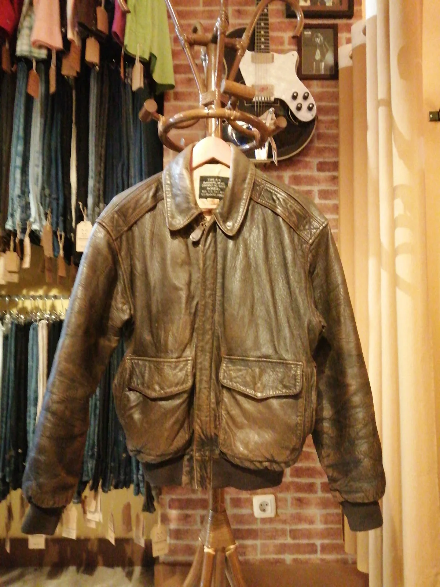
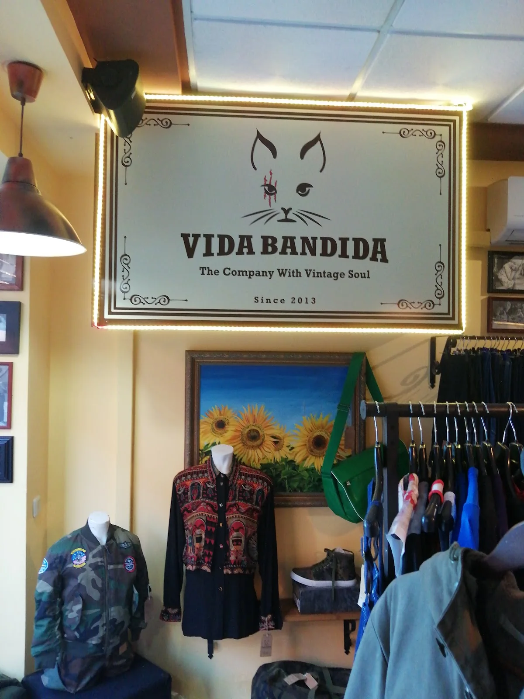
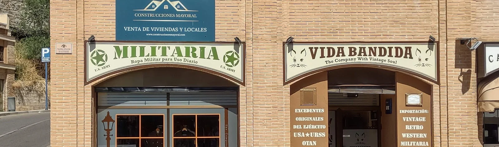
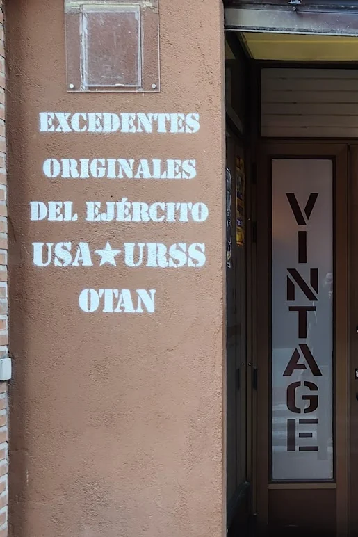
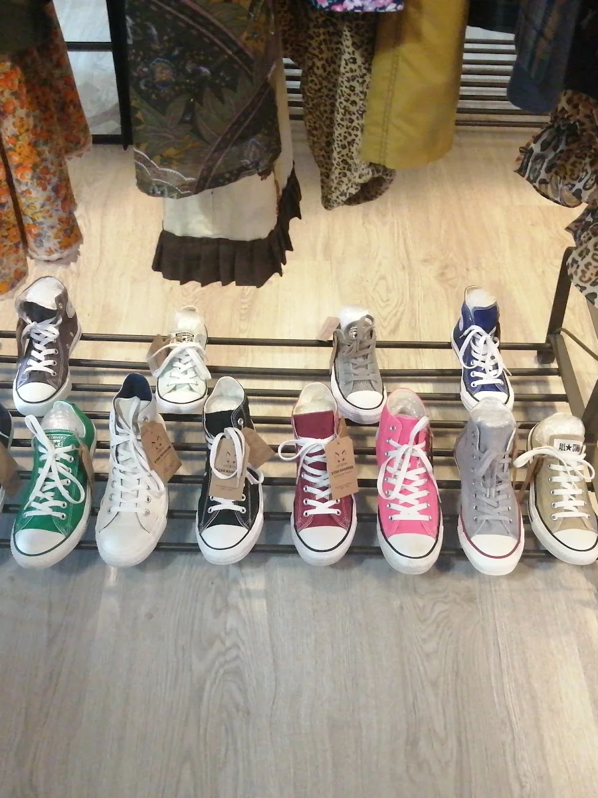
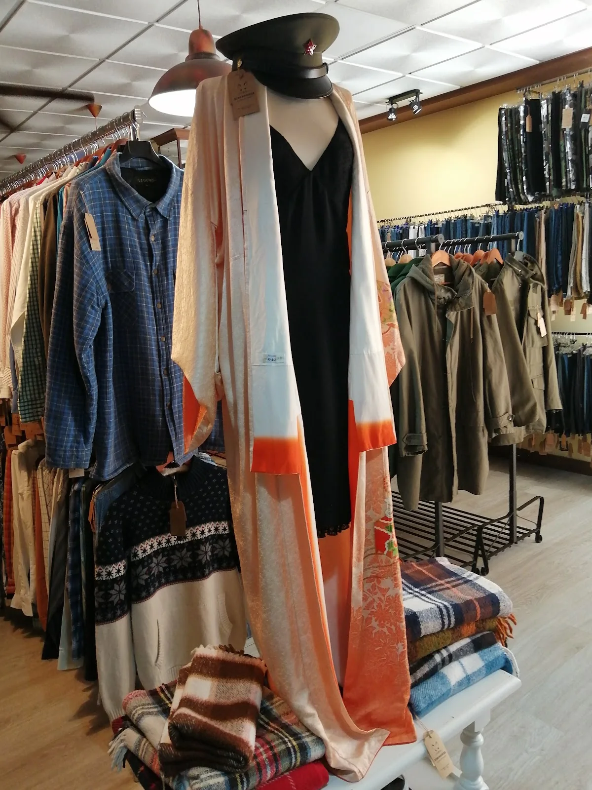
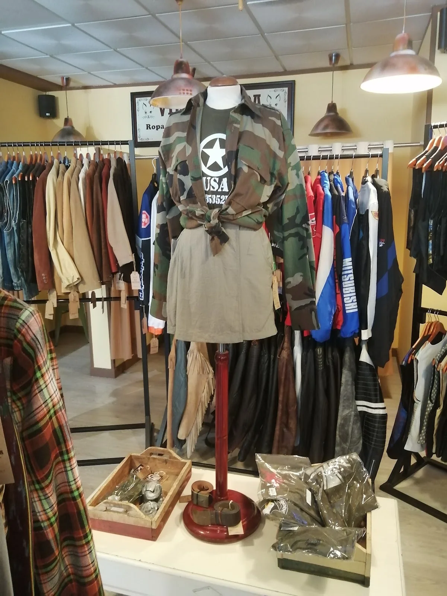
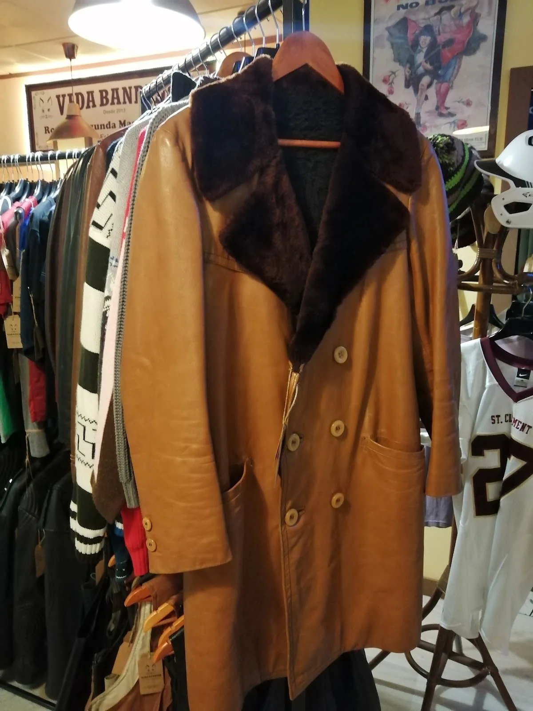
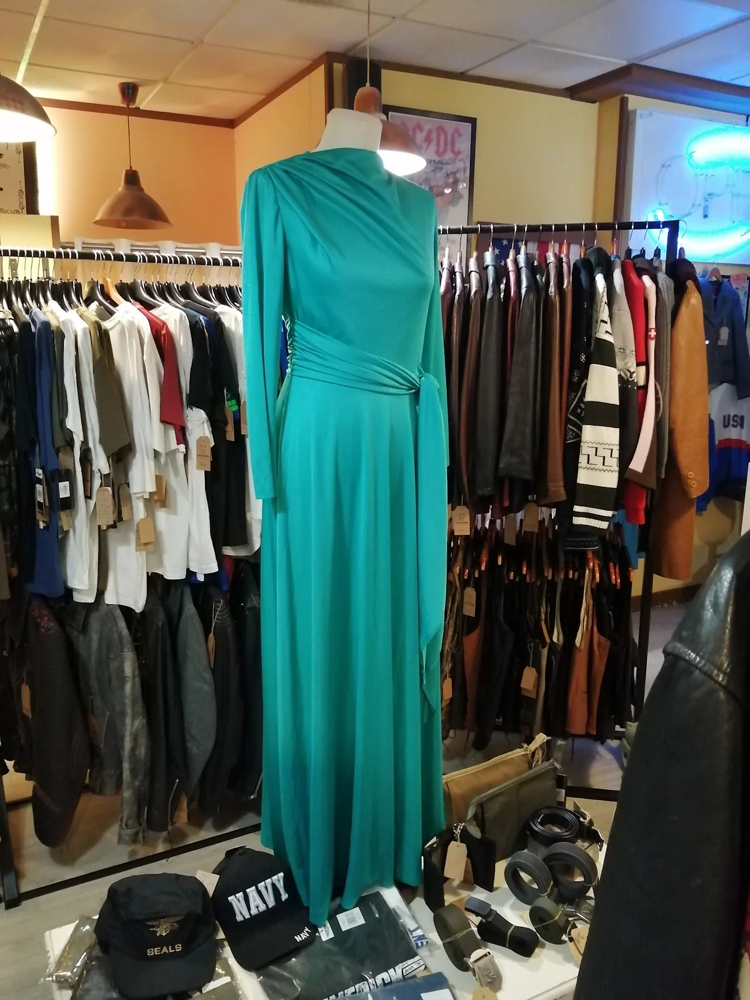
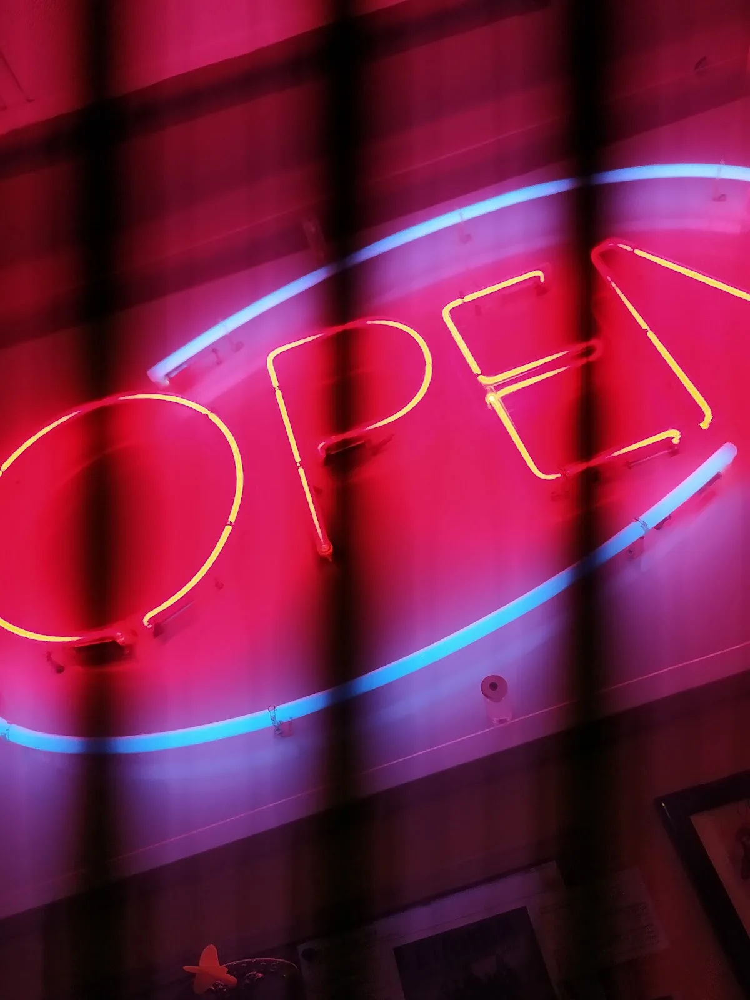

Parkas y bombas
Prendas de abrigo militares originales: parkas, bombas de aviador y abrigos de campaña, la mayoría con su etiqueta de origen.
The Company With Vintage Soul
Excedentes originales de los ejércitos USA ★ URSS ★ OTAN y moda de importación vintage, retro, western y militaria. Desde 2013 llenando una tienda de Toledo de piezas que ya no se fabrican — y de las historias que las acompañan.

La tienda
Vida Bandida está en la Travesía Estación de Autobuses, pegada a su hermana Militaria — la tienda de ropa militar para uso diario que comparte pared y escaparate. Dentro, el género está ordenado por tallas y con su información a la vista: hay prendas sin etiqueta que nunca se han puesto y clásicos de verdad, con su año cuando son vintage.
Detrás del mostrador suele estar Julián. Si algo repiten sus clientes en Google no es la ropa, es él: recomienda bien, deja mirar con calma y pone buena música mientras rebuscas. Por eso hay quien vuelve a Toledo solo para pasar por aquí.
«Recomiendo ir con tiempo para poder ver bien todo lo que tienen en la tienda».
Reseña real en Google


Excedentes
Buena parte del género llega de excedentes militares originales: parkas, bombas, camuflajes, petates y lonas que acabaron aquí procedentes de los ejércitos de Estados Unidos, la Unión Soviética y la OTAN. La otra mitad es importación directa de ropa vintage, retro, western y militaria.

Qué encuentras
Sin catálogo online y sin precios fijos: el género cambia cada semana. Esto es una muestra de lo que suele haber.
Prendas de abrigo militares originales: parkas, bombas de aviador y abrigos de campaña, la mayoría con su etiqueta de origen.
Vaqueros de los de antes, ordenados por talla y con el año cuando se sabe. Estado revisado pieza a pieza.
Chaquetas y chaquetones de cuero, muchos de ellos clásicos americanos y europeos que se conservan impolutos.
Camuflajes, monos y ropa de trabajo con historia: para llevarla a diario o para coleccionar.
Botas, zapatillas y calzado de distintas épocas, incluidos clásicos que siguen de moda. Por colores.
Bolsas, petates, cinturones y complementos militares. La pieza que le falta a un conjunto también está aquí.
Cuéntanoslo por WhatsApp: talla, prenda o estilo. Te decimos qué hay en ese momento, si se puede conseguir y cuándo te viene bien pasarte a verlo.
Dentro
Poca cosa para lo que hay: la tienda se disfruta mirando percha a percha.





Estamos en la Travesía Estación de Autobuses, en Toledo, al lado de la estación. Sin cita: entras y rebuscas.
«Un gran descubrimiento durante nuestra visita a Toledo. Ropa militar y civil, así como accesorios de gran calidad a muy buen precio. ¡Totalmente recomendable! Además el dueño, Julián, es encantador. Habríamos estado horas de horas hablando.»
Javier Molina AsensioReseña en Google
«Si quieres ropa de buena calidad, cuero, vaqueros etc a precio inigualable, pasar un rato de lo más agradable escuchando buen rock and roll y charlando y riendo con el dueño de esta magnifica tienda este es tu sitio. Un oasis en el desierto.»
sergio manzanaresReseña en Google
«Increíble. Me he enamorado de un abrigo alemán del año 68. Impoluto. Tenía dos, he comprado uno y estoy por volver a por el otro.»
Nieves Lidia Calvo O.Reseña en Google
«¡Gran hallazgo! Tienda de segunda mano vintage de calidad, con precios asequibles. Perfecto si necesitas completar tu guardarropa con buenos artículos. (O incluso si quieres reinventarte por completo). Allí le esperan música y buen humor :)»
LounaReseña en Google
«Julián es un crack, te atiende genial y muy buen tío. Mi novia y yo compramos dos chaquetones de marca a muy buen precio. Una tienda muy bonita que merece la pena visitar y te puedes encontrar alguna ganga.»
Rafa MorenoReseña en Google
«Apenas llegamos a Toledo nos encontramos con este lugar, la ropa es hermosa, muchos looks y gran variedad. De los mejores que hemos visto en toda España, el dueño Julian nos atendió espectacular, nos matamos de risa y casi lo invitamos a tomar unas cañas.»
Sofía CorvalánReseña en Google

Horario
| Lunes | 10:00 – 14:00 · 16:30 – 20:30 |
|---|---|
| Martes | 10:00 – 14:00 |
| Miércoles | 10:00 – 14:00 · 16:30 – 20:30 |
| Jueves | 10:00 – 14:00 |
| Viernes | 10:00 – 14:00 · 16:30 – 20:30 |
| Sábado | 10:00 – 14:00 |
| Domingo | Cerrado |
Martes y jueves solo por la mañana · Domingos cerrado · Los festivos pueden cambiar el horario
Contacto
No hace falta cita ni reserva. Y si prefieres preguntar antes de venir, escríbenos o llámanos: contestamos entre horario de tienda.
Antes de venir